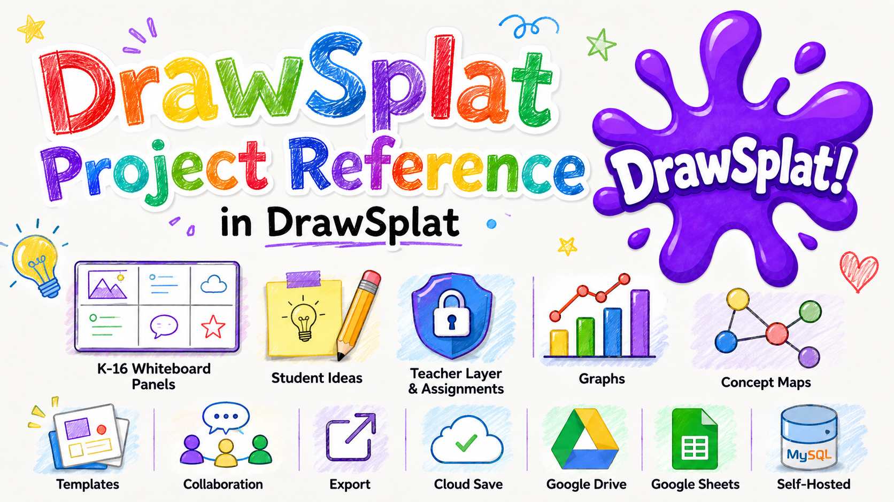

Feature Guide
Saving, Restore Points, and Exporting
Keep student work safe, create checkpoints, move boards between devices, and export finished work for sharing or printing.
Save options
- Browser autosave: keeps a local draft in the current browser.
- .drawsplat.json: saves a portable board file you can load later.
- District online save: explicit account-owned Save/Open with MariaDB/MySQL, plus classroom assignments and submissions.
- Google-backed save: saves boards, templates, rooms, and turn-ins when Apps Script is configured.
- Reusable frame templates: save a panel layout for future activities.
Restore points
Use restore points before a major change, before students begin work, or before trying a new activity structure. A restore point gives you a checkpoint you can return to without rebuilding the whole board.
Export options
- PNG export: useful for sharing one panel as an image.
- PDF export: useful for printing, posting, or saving multi-panel work.
- GIF creation: use when you want a simple animated sequence from board frames or images.
Recommended habits
- Create a restore point after building a teacher-ready prompt.
- Export or save a local file before clearing a board or running TNT Reset.
- Use meaningful file names that include class, topic, and date.
- For cross-device saving, verify your district’s MariaDB/MySQL service or your selected Apps Script deployment before using it with a class.
- Keep a local .drawsplat.json copy of important templates.
Private online saving with MariaDB / MySQL
After your school deploys the saving API and enables it with the MySQL Wizard, use File → Save online and Open online board for your account’s private boards. Added audio/video notes are included; device autosave and recording drafts remain local until you save the board online.
Saving is explicit. If another device saved a newer copy, use Save File to keep your work before opening the online copy. Online account → Sign out revokes your session but leaves device copies. District classrooms provide assignments, turn-ins, and teacher feedback. Apps Script shared rooms and its review workflow use a separate backend. See the hosting and connection guide.